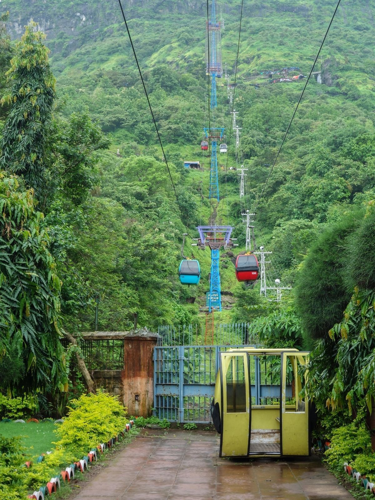
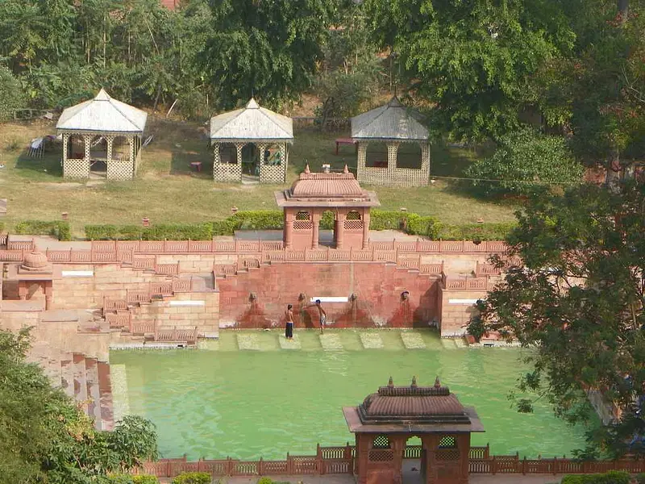

Explore Rajgir
Why Visit Rajgir?
Rajgir, nestled in the hills of Bihar, is a historical city known for its connection to both Buddhism and Jainism. It was the first capital of the Magadh kingdom and holds significance due to Buddha and Mahavira’s presence. The natural beauty, ropeway rides, ancient ruins, and hot springs make Rajgir a perfect spiritual and nature retreat.
Best Time to Visit
October to March: Ideal for sightseeing, nature walks, and ropeway rides. Rajgir Mahotsav also takes place in December.
Top Places to Visit in Rajgir
- Vishwa Shanti Stupa: A beautiful white peace pagoda atop Ratnagiri hill, reached by ropeway.
- Venu Van: Bamboo grove gifted to Lord Buddha by King Bimbisara for meditation.
- Hot Springs: Sacred hot water springs believed to have healing properties, especially Brahmakund.
- Ajatshatru Fort: Ruins of a 6th-century BC fort built by King Ajatshatru of Magadh.
- Saptaparni Cave: Where the first Buddhist council was held after Buddha’s Mahaparinirvana.
Local Homestays & Stays
- Hotel Anand Rajgir: Affordable and close to tourist attractions.
- Gargee Gautam Vihar: A modern stay with spa and restaurant, near Shanti Stupa.
- Find More Stays on Google
How to Reach Rajgir
- By Train: Rajgir Railway Station connects to Patna and Gaya.
- By Road: 100 km from Patna via NH31.
- Nearest Airport: Gaya Airport (75 km), Patna Airport (100 km). Book your ticket now
Explore on Map
Gallery
Rajgir’s Beauty & Spiritual Calm
Rajgir offers a unique blend of history, peace, and natural beauty – from the ancient ruins to serene hills and healing hot springs, it’s a perfect destination for heritage lovers and spiritual seekers.


